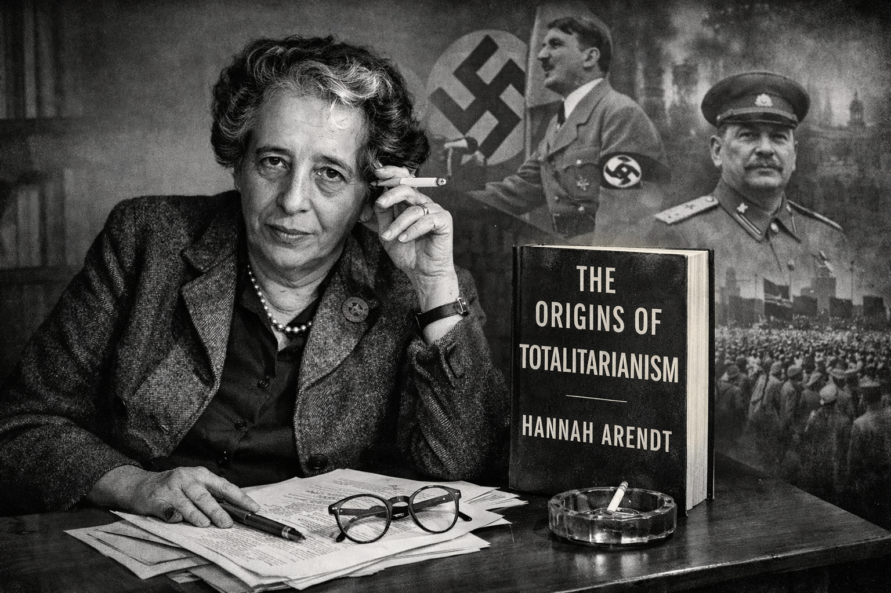
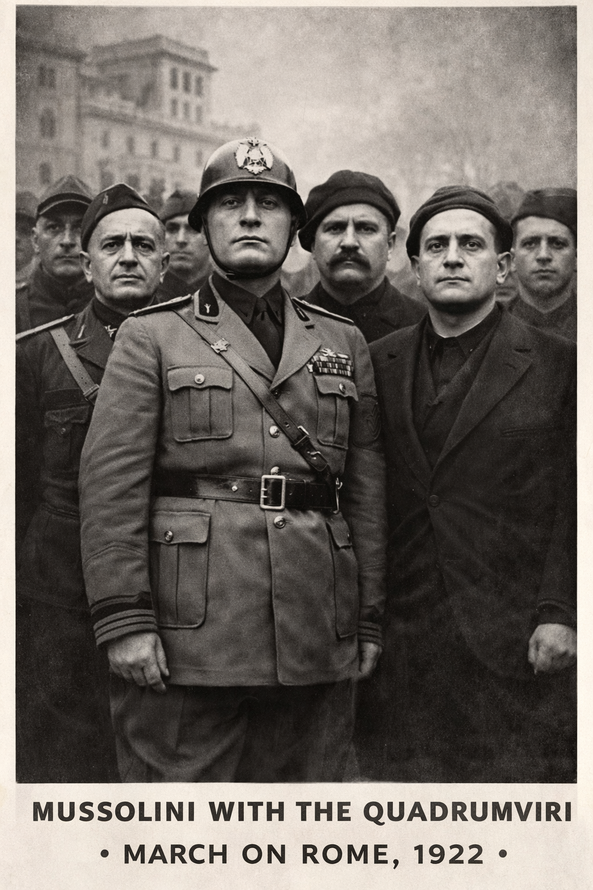
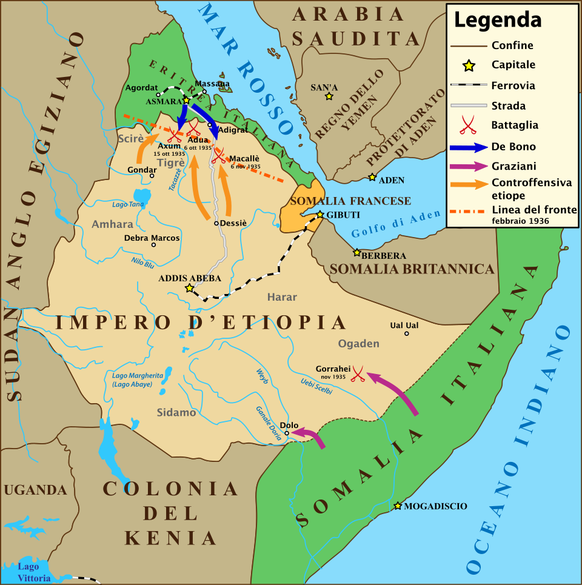
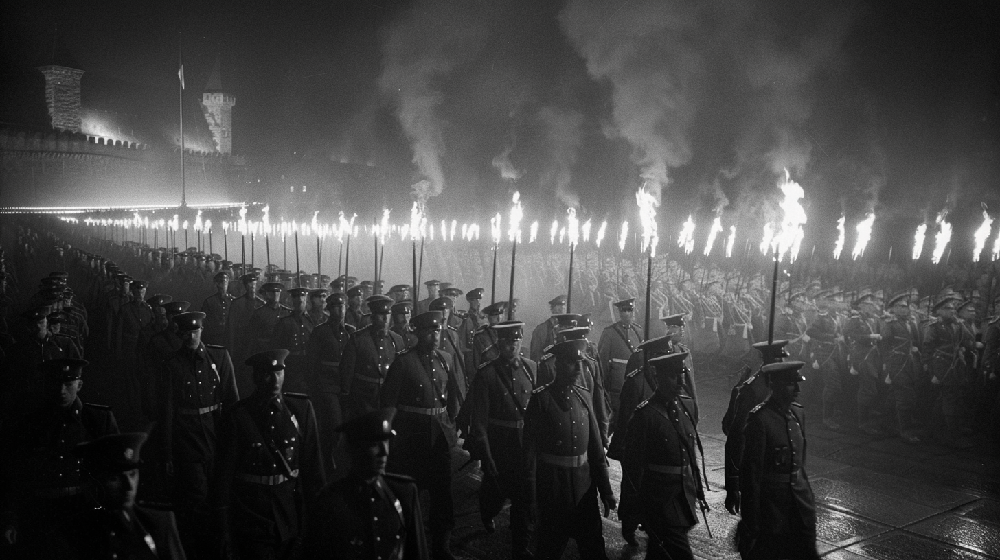
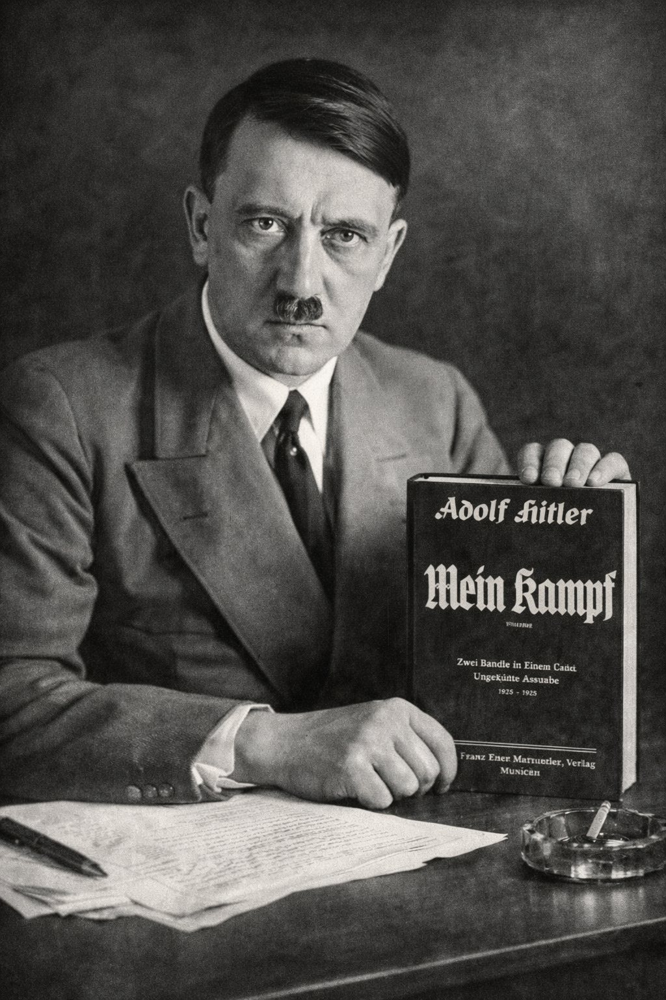
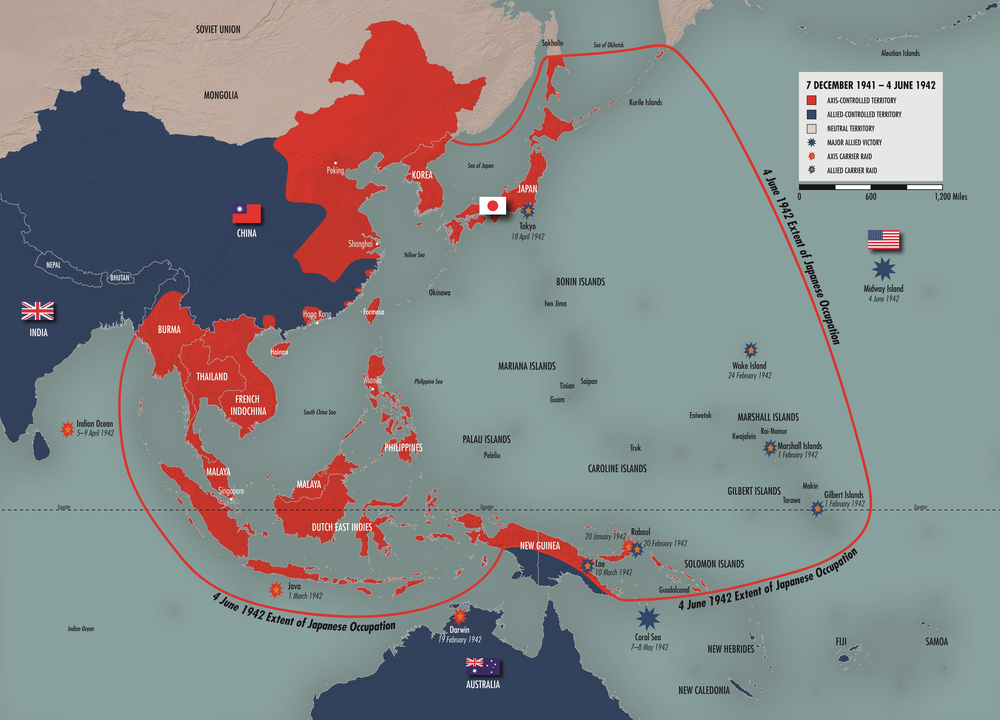
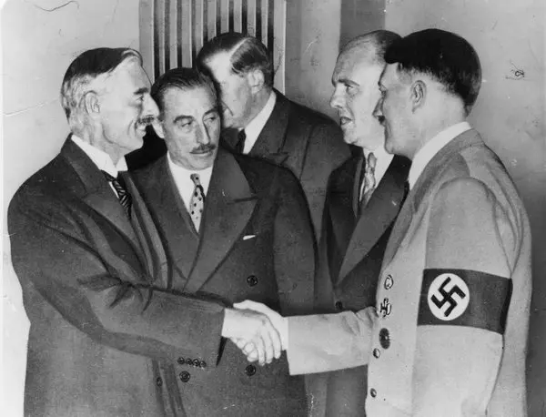
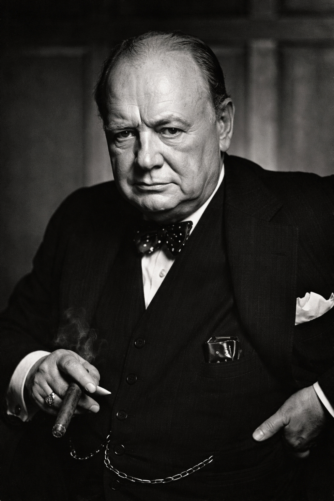
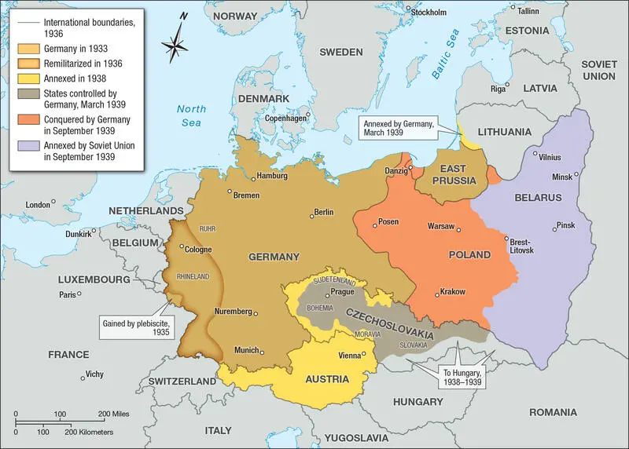
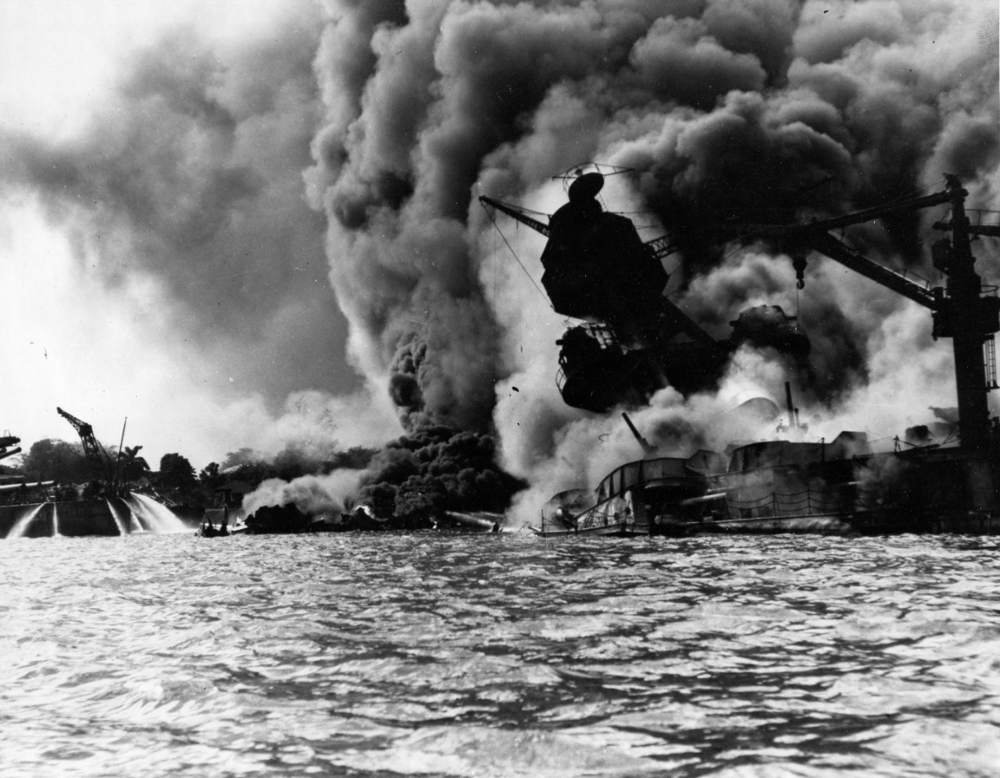

What Is Fascism?
- Not a synonym for dictatorship — fascism has a specific, coherent structure
- Emerged after WWI as a response to the twin crises of liberalism and Marxism

Nazi Party Rally, Nuremberg · 1933 · Bundesarchiv · Wikimedia Commons
Eight Characteristics — I
Each feature performs a structural function — none is accidental
- 1. Opposition to Marxism
- 2. Opposition to liberal democracy (the institution — elections, parliaments, opposition parties)
- 3. Opposition to political liberalism (the philosophy — individual rights, rule of law, freedom of conscience)
- 4. Totalitarian ambitions
Totalitarianism
- The state claims authority over every dimension of human life — economic, cultural, familial, spiritual
- No sphere is private; no institution is neutral
- Intermediate institutions — churches, unions, parties, professions — are eliminated or captured
- A single ideology enforced by state terror replaces all competing loyalties
Eight Characteristics — II
The final four explain why fascism requires enemies — and war
- 5. Imperialism — territorial expansion as ideological necessity
- 6. Glorification of violence — war as proof of national vitality
- 7. Extreme nationalism — the nation above all other loyalties
- 8. Systematic scapegoating — converts economic grievance into ethnic hatred
Fascism, Communism, and Totalitarianism
- Hannah Arendt — Origins of Totalitarianism (1951): both Nazi and Soviet systems shared a structural ambition to reorganize all of human life under one ideology
- Friedrich Hayek — The Road to Serfdom (1944): fascism and communism converge on the elimination of intermediate institutions
- Both used secret police, mass propaganda, and systematic terror
- Both required a permanent enemy to justify emergency rule

Hannah Arendt · 1975 · Barbara Niggl Radloff · Wikimedia Commons
Taking Fascism Seriously
⏸ Pause & Reflect
Fascism is often called "irrational" or "extreme."
What would it mean to take fascism seriously as a coherent political ideology?
Does understanding fascism on its own terms make it more or less dangerous?
Section II
Why couldn't a fascist regime simply consolidate and govern?
Why Fascism Could Not Stand Still
Fascist legitimacy rested on four interdependent claims — each required external action to sustain
- The nation had been humiliated and must be reborn — visibly and continuously
- Internal enemies caused that humiliation and must be destroyed
- The leader embodies the national will — his infallibility requires a record of success
- Economic demands of the fascist state — autarky, arms production — require raw materials only conquest could provide
War as Proof of Vitality
- A problem to be managed and minimized
- Contained within legal structures
- War as last resort — a policy failure
- An affirmation — expression of national will
- Proof of racial vitality
- War as policy goal — permanent mobilization
Mussolini on War
⏸ Pause & Reflect
Mussolini said war brings human energy to its highest tension. Hitler wrote that nations refusing to struggle are biologically doomed.
If they actually believed this — was appeasement ever going to work?
Section III
Three roads to the same structural destination
Italy: Fascism's Birthplace
- Mussolini coined the term "fascism" and invented its political form
- Former socialist journalist — turned to nationalism during WWI
- Black Shirt squads attacked unions and socialists (1920–22) with tacit state tolerance
- March on Rome (1922) — King appoints Mussolini Prime Minister rather than risk civil war

Mussolini with the Quadrumviri · March on Rome, 1922 · Wikimedia Commons
Italy: The Ethiopia Test
- Italy invades Ethiopia (1935) — a direct test of international response
- League of Nations condemns the invasion and imposes economic sanctions — but excludes oil
- Sanctions never enforced consistently; Mussolini completes the conquest by May 1936
- Rome-Berlin Axis formalized October 1936

Italian Invasion of Ethiopia · 1935–36 · Wikimedia Commons
Germany: The Conditions
- Versailles Treaty (1919) — reparations, territorial losses, military limits, War Guilt Clause
- Dolchstoßlegende — the "stab-in-the-back" myth: Germany betrayed, not defeated
- Weimar Republic — democratic but fragile; parliamentary gridlock, street violence, no stable center
- Great Depression — 6 million unemployed by 1932; the economic crisis that breaks the republic

Reichstag Opening Ceremony · Bundesarchiv · Wikimedia Commons
Germany: Rise of the Nazi Party
- 1920 — Hitler assumes control of the NSDAP; issues the 25-Point Program; organizes the SA as a paramilitary strike force
- 1923 — Beer Hall Putsch fails; Hitler imprisoned; vows to seize power by legal means
- 1929 — Party membership reaches 180,000; Depression accelerates mass recruitment

SA March, Nuremberg Rally · Bundesarchiv · Wikimedia Commons
- 1933 — Nuremberg Rallies transform the movement into a spectacle of national rebirth
Germany: The Seizure of Power
- 1932 — Nazis receive 14 million votes; largest party in the Reichstag
- January 1933 — Hitler appointed Chancellor by Hindenburg
- Reichstag Fire provides pretext for the Enabling Act — dictatorial powers within two months
- July 1933 — all other political parties dissolved; Germany ceases to be a republic

Adolf Hitler · Bundesarchiv · Wikimedia Commons
Germany: Nazi Imperialism
- Lebensraum — "living space" in Eastern Europe; racial hierarchy as the justification for conquest
- Deficit-financed rearmament after 1933 — Germany running a war economy before the war
- Anschluss (1938) — Austria annexed; Austrian gold reserves absorbed
- Sudetenland (1938) — Czechoslovak industrial capacity and fortifications seized; appeasement ratified

Hitler wanted all German-speaking nations in Europe to be a part of Germany.
Japan: Military Capture of the State
- No single charismatic leader — a military elite progressively captured civilian government
- Nationalist ideology organized around the Emperor as quasi-divine symbol of national unity
- Tools: political assassination, institutional pressure, cultural nationalism
- Imperial expansion modeled on Western colonial logic — Japan industrialized on those terms
.jpg)
Japanese imperial expansion in Asia and the Pacific
Japan: The Path to War
- 1931 — Mukden Incident: fabricated pretext → invasion and occupation of Manchuria
- 1933 — League of Nations condemns; Japan withdraws from the League — establishing the template
- 1937 — Marco Polo Bridge Incident → full-scale war with China begins
- 1937–38 — Rape of Nanking — est. 200,000–300,000 killed; documented by Western journalists; international response muted

Japanese imperial expansion in Asia and the Pacific
⏸ Pause & Reflect
The League condemned Japan's seizure of Manchuria (1931) and Italy's invasion of Ethiopia (1935). In both cases, the aggressor nation simply ignored the condemnation and continued.
What does this reveal about the gap between international norms and international power?
Section IV
Was appeasement weakness — or a failure of analysis?
The Assumption of Rational Actors
Liberal democratic foreign policy rests on foundational assumptions — all of which fascism explicitly rejected
- States have bounded, negotiable interests
- Leaders prefer negotiation to destructive conflict
- Concessions can secure stability
- Fascism has ideological imperatives — not interests
- An ideological imperative cannot be satisfied by territorial compromise
- Every concession validated escalation
Appeasement and Its Logic
- Munich Agreement (Sept. 1938) — Germany annexes the Sudetenland; Chamberlain returns declaring "peace for our time"
- Chamberlain was not a fool — he faced genuine constraints
- The premise: Hitler had limited, achievable objectives — once satisfied, stable peace would follow
- March 1939 — Germany occupies all of Czechoslovakia; the premise is abandoned openly

Neville Chamberlain and Adolf Hitler · Munich Agreement, 1938
Churchill's Minority Position

Winston Churchill · Prime Minister of Great Britain
The Failure of Appeasement
- March 1939 — Germany occupies all of Czechoslovakia; the Sudetenland pretext openly abandoned
- August 1939 — Molotov-Ribbentrop Pact — Nazi-Soviet non-aggression treaty shocks the West
- September 1, 1939 — Germany invades Poland; Britain and France declare war two days later
- Appeasement had not purchased peace — it had purchased eleven months and the destruction of Czechoslovakia

Nazi Germany territorial expansion 1933–1939 · Map 71
Section V
How does a nation move from neutrality to world war in a decade?
American Neutrality and Its Contradictions
- Isolationist impulse was powerful — WWI disillusionment, Nye Committee findings, "Europe's quarrel"
- Neutrality Acts (1935–37) — prohibited arms sales and loans to all belligerents equally
- Applied equally to aggressor and victim — Germany and Poland treated as morally equivalent
- FDR's Quarantine Speech (1937) — tested public opinion; reaction hostile; Roosevelt pulled back

FDR Signs Lend-Lease Act · March 1941 · Wikimedia Commons
Arsenal of Democracy
- June 1940 — Fall of France in six weeks — Britain stands alone; strategic calculus transforms
- Sept. 1940 — Destroyers for Bases — 50 aging destroyers to Britain in exchange for Caribbean base rights
- March 1941 — Lend-Lease — transfer war materials to any nation vital to American security; FDR: "lending a garden hose to a neighbor whose house is on fire"
- June 1941 — Lend-Lease extended to the Soviet Union after Germany invades
The Pacific Escalation
- 1931 — Japan seizes Manchuria in the unprovoked Mukden Incident — the beginning of systematic expansion
- 1937 — Japan launches full-scale war on China; commits the Rape of Nanking
- 1940 — Japan occupies French Indochina and joins the Tripartite Pact with Nazi Germany and Italy
- 1940–41 — U.S. responds with escalating embargoes on scrap metal, petroleum, and oil to contain Japanese aggression
- Dec. 7, 1941 — Japan launches surprise attack on Pearl Harbor
December 7, 1941

- 2,400+ American military personnel killed; 8 battleships sunk; ~200 aircraft destroyed
- Congress declares war on Japan — Germany and Italy declare war on the U.S. four days later
- American isolationism destroyed as a political force
⏸ Pause & Reflect
The United States was formally neutral until December 1941 — but Lend-Lease and naval escorts for British convoys had already made it a de facto belligerent by mid-1941.
At what point does "neutrality" become a legal fiction?
Does the distinction between formal and material involvement matter — morally, diplomatically, or strategically?
The non-aggression treaty signed between Nazi Germany and the Soviet Union nine days before the invasion of Poland shocked the world — the two ideological enemies who had defined themselves in explicit opposition to each other had secretly agreed not to fight. The public treaty pledged neutrality if either signatory went to war with a third party. The secret protocol, unknown until after WWII, divided Eastern Europe into German and Soviet spheres of influence: Germany would take western Poland; the Soviet Union would take eastern Poland, Finland, the Baltic states, and Bessarabia. For Hitler, the pact secured his eastern flank for the invasion of Poland and eliminated the nightmare of a two-front war — at least temporarily. For Stalin, it bought time to rebuild a Red Army gutted by his own purges. The pact effectively ended any possibility that Western appeasement could construct an anti-German coalition including the Soviet Union.
The Senate Munitions Investigating Committee, chaired by Senator Gerald Nye of North Dakota, investigated the U.S. entry into World War I and concluded that American involvement had been engineered primarily by arms manufacturers and bankers — the "merchants of death" — who had profited from Allied war contracts and had a financial stake in an Allied victory. The committee's findings, widely publicized and broadly believed, strengthened the case for strict neutrality legislation by suggesting that economic entanglement with belligerents led inevitably to military involvement. The Neutrality Acts of 1935–37 were the direct legislative product of the Nye Committee's conclusions. Historians have largely rejected the committee's central thesis — the causes of American entry in 1917 were more complex than financial self-interest — but its political impact in shaping 1930s isolationism was substantial.
Franklin Roosevelt's speech in Chicago, delivered in the immediate aftermath of Japan's full-scale invasion of China, was his first significant public attempt to shift American opinion toward collective action against aggressor nations. Using the metaphor of a disease epidemic requiring quarantine to protect the healthy, Roosevelt suggested that the international community had an obligation to isolate nations that were spreading the "contagion" of war. The speech was deliberately ambiguous about what "quarantine" would actually mean in practice — Roosevelt was testing the waters, not announcing a policy. The reaction was sharply hostile: isolationist groups, the press, and members of Congress condemned it as a step toward war. Roosevelt publicly retreated, denying he had proposed anything specific. The episode revealed how constrained he was by domestic public opinion — and how far he would have to move it before he could act.
Liberal democracy had promised that rational self-interest, parliamentary negotiation, and individual rights would produce stable, prosperous societies. World War I shattered that confidence. Four years of industrial slaughter — producing 20 million dead and economies in ruins — seemed to expose the bankruptcy of liberal institutions. Parliaments had voted for the war; liberal governments had administered it; liberal economics had financed it. The postwar settlements were chaotic, the promised peace fragile, and the economic recovery uneven. For millions of Europeans, liberal democracy had proven itself incapable of delivering either security or dignity. Fascism offered national rebirth through decisive leadership as the alternative.
Marxist theory predicted that industrial workers — the proletariat — would develop international class consciousness and unite across national lines against their capitalist oppressors. WWI destroyed that prediction. In 1914, socialist parties across Europe voted to support their respective national governments and sent their members to kill one another. The internationalist solidarity that Marxism promised had evaporated at the first test. The Russian Revolution of 1917 then split the left: communists celebrated it as the vanguard of world revolution; social democrats feared it as a totalitarian model. The European left entered the 1920s fragmented, discredited, and unable to offer a unified response to the economic crises that fascism would exploit.
German-Jewish philosopher who fled Nazi Germany, eventually settling in the United States. Her landmark work The Origins of Totalitarianism (1951) argued that Nazi Germany and Stalinist Russia — despite fierce mutual antagonism — shared a common structural feature: the ambition to reorganize all of human life according to a single ideological principle enforced by state power. Arendt called this totalitarianism, and her application of the term to both regimes was controversial but analytically powerful. She traced totalitarianism's roots in antisemitism, imperialism, and the collapse of the European nation-state system.
Austrian-British economist and political philosopher. In The Road to Serfdom (1944), written during World War II, Hayek argued that central economic planning — whether pursued by fascist or socialist states — inevitably leads to the elimination of political freedom. He emphasized that fascism and communism, whatever their differences, both required the destruction of intermediate institutions (churches, professional associations, independent unions, political parties) that might compete with the state's claim on individual loyalty. Hayek represented a minority view on fascism's ideological placement — closer to the left than most scholars accept — but his structural analysis of totalitarian convergence remains influential.
The National Socialist German Workers' Party, founded in Munich in 1919 as the German Workers' Party and renamed in 1920 after Hitler joined and rapidly assumed control. The name was deliberately engineered to appeal across ideological lines — "National Socialist" combined nationalist appeal to the right with socialist-sounding rhetoric aimed at the working class. Despite the name, the party was never a workers' movement in any meaningful sense; its financial backing came primarily from middle-class contributors and, later, German industrialists. Hitler transformed it from a small Munich beer-hall debating society into a mass movement with a paramilitary apparatus, a national press, and an increasingly explicit ideological program centered on antisemitism, anti-Marxism, and German national rebirth.
The paramilitary wing of the Nazi Party, organized from 1921 and known colloquially as the Brownshirts for their uniform. The SA's primary functions were to protect Nazi meetings and rallies from disruption, to disrupt the meetings of rival parties — especially communist and socialist gatherings — and to project an image of disciplined, martial strength. SA violence was a deliberate political tool: it intimidated opponents, demonstrated the party's organizational capacity, and conveyed that the Nazis were serious in ways that conventional politicians were not. By 1932 the SA had grown to several hundred thousand members. After Hitler's seizure of power, the SA's ambitions to become a new revolutionary army brought it into conflict with the regular military (Wehrmacht) and with the SS. This tension ended in the Night of the Long Knives (June 1934), in which Hitler ordered the murder of SA leadership, including its chief Ernst Röhm, consolidating the SS as the regime's primary instrument of terror.
The Reichstag was the lower house of the German parliament under both the German Empire (1871–1918) and the Weimar Republic (1919–1933). Under the Weimar constitution, the Reichstag was elected by universal suffrage and held primary legislative authority, though the President retained emergency powers under Article 48 that would prove fatally exploitable. The Weimar Reichstag was characterized by extreme political fragmentation — over a dozen parties regularly held seats — which made stable majority coalitions nearly impossible. By 1930, parliamentary governance had effectively broken down; chancellors were ruling by presidential decree rather than legislative majority. This dysfunction was itself a precondition for the Nazi rise: Hitler did not destroy a functioning democracy. He exploited one that was already failing.
The Reichstag building was set ablaze on the night of February 27, 1933 — less than four weeks after Hitler became Chancellor. A young Dutch communist named Marinus van der Lubbe was arrested at the scene and subsequently executed. The Nazis immediately blamed a communist conspiracy and used the fire to justify the Reichstag Fire Decree, signed by President Hindenburg the following morning, which suspended civil liberties and enabled the arrest of political opponents without trial. Whether van der Lubbe acted alone, was manipulated by the Nazis, or whether the Nazis themselves orchestrated the fire remains historically contested — but the political exploitation was immediate, deliberate, and decisive. The decree provided the legal framework for the terror that followed and set the stage for the Enabling Act three weeks later. The fire was the hinge point between Weimar democracy and Nazi dictatorship.
The NSDAP's founding platform, drafted by Hitler and Anton Drexler, combined ultranationalism, antisemitism, and anti-capitalist rhetoric in ways designed to appeal across class lines. Key demands included the unification of all Germans in a Greater Germany, revocation of the Versailles Treaty, citizenship restricted to those of "German blood" (explicitly excluding Jews), nationalization of large corporations, land reform, and the creation of a strong central government. The anti-capitalist language was genuine — and was later an embarrassment to the regime once it aligned with German industrialists. The platform was never formally withdrawn but was progressively subordinated to Hitler's personal authority as the party grew.
Hitler's attempt to seize power in Munich by force, modeled loosely on Mussolini's March on Rome. On the evening of November 8, SA men surrounded the Bürgerbräukeller where Bavarian state commissioner Gustav von Kahr was speaking, and Hitler fired a pistol into the ceiling, declaring a national revolution. The putsch collapsed the following day when police fired on the marching column in the Odeonsplatz, killing 16 Nazis. Hitler fled, was arrested, and was tried for treason. The trial gave him a national platform; his closing speech was widely reported. He was sentenced to five years in Landsberg Prison, served nine months, and used the time to dictate Mein Kampf to Rudolf Hess. The strategic lesson he drew: electoral legitimacy, not armed seizure, was the path to power in Weimar Germany.
The annual Nazi Party Congress held in Nuremberg became the regime's premier instrument of mass mobilization and ideological theater. Beginning in 1933, architect Albert Speer designed the rally grounds as a monumental stage — the "Cathedral of Light," created by 130 anti-aircraft searchlights aimed skyward, became one of the regime's most iconic images. Hundreds of thousands of participants attended over several days of marching, speeches, and ritual. The rallies were filmed by Leni Riefenstahl, whose Triumph of the Will (1935) transformed the 1934 rally into a global propaganda document. The rallies served multiple functions: demonstrating the regime's organizational capacity, binding participants through shared ritual, and projecting an image of irresistible national unity to domestic and foreign audiences.
The concept of Lebensraum (living space) held that the German people required additional territory — primarily in Eastern Europe and the Soviet Union — to sustain their population and achieve economic self-sufficiency. The idea had roots in late 19th-century German geopolitics but was central to Hitler's ideology from the beginning. Mein Kampf was explicit: Germany's future lay not in overseas colonies (the British model) but in continental conquest eastward, displacing or destroying the Slavic populations and replacing them with German settlers. The racial ideology and the territorial program were inseparable — Lebensraum required the subjugation of "inferior" races to provide land and labor for the "master race." This was not a postwar rationalization. Hitler wrote it in 1924 and never deviated from it.
The provision of the Versailles Treaty (1919) that assigned sole responsibility for World War I to Germany and its allies. The clause was the legal basis for the reparations demand — Germany's "guilt" obligated it to compensate the Allied powers for all losses and damages. German resentment of Article 231 was nearly universal across the political spectrum, but the Nazi movement exploited it most effectively, weaving it into the broader narrative of national humiliation and betrayal that made the Dolchstoßlegende so politically potent.
The claim, propagated by German military commanders after 1918 and adopted wholesale by the Nazi movement, that Germany had not been defeated militarily on the Western Front but had been betrayed by socialists, Jews, and liberal politicians on the home front. The myth was factually false — Germany's military situation in autumn 1918 was desperate and the High Command itself had concluded that continued fighting was impossible. But it served a crucial political function: it shifted responsibility for defeat away from the military and onto civilian and minority scapegoats, structuring Nazi ideology from its inception.
Beer Hall Putsch (1923): Hitler's attempted coup in Munich failed. He was arrested, tried for treason, and sentenced to five years in Landsberg Prison (he served nine months). The imprisonment produced Mein Kampf, which laid out Nazi ideology with remarkable explicitness — racial hierarchy, the Jewish enemy, Lebensraum in Eastern Europe, the destruction of Marxism and liberal democracy. Western leaders who dismissed it as the ravings of a crank made a catastrophic analytical error.
Enabling Act (March 1933): The Reichstag Fire of February 1933 provided the pretext. The fire was blamed on a communist, allowing the Nazis to push through emergency legislation suspending civil liberties. The Enabling Act that followed granted Hitler the power to enact laws without Reichstag approval for four years — effectively transferring legislative authority to the Chancellor. It passed 444–94, with Social Democrats the only party voting against. All other parties subsequently dissolved themselves under pressure.
Mussolini's paramilitary organizations, formally organized as the Fasci di Combattimento from 1919, became notorious for systematic violence against left-wing organizations, labor unions, and local socialist governments throughout northern Italy in 1920–22. Their targets were beaten, their offices destroyed, their newspapers shut down. The violence was carried out with the tacit support of Italian industrialists who feared socialist revolution, and with the passive tolerance — often active complicity — of local police and state authorities. This pattern — paramilitary violence tolerated or assisted by the existing state apparatus — is characteristic of fascist seizures of power and distinguishes them from classic military coups.
Following Italy's invasion of Ethiopia, the League of Nations imposed economic sanctions under Article 16 of the Covenant — the first time the collective security mechanism had been invoked against a major power. The sanctions were real but deliberately incomplete: they covered arms, loans, and some raw materials, but explicitly excluded oil — the commodity that would actually have crippled the Italian military campaign in the Ethiopian highlands. British and French leaders feared that an oil embargo might push Mussolini toward Hitler and destabilize the anti-German coalition they were trying to maintain. The result was a sanctions regime that was punishing enough to antagonize Mussolini but not effective enough to stop the war — producing the worst of both outcomes.
The military's grip on Japanese politics tightened through several mechanisms in the late 1920s and early 1930s. Political assassination was used against moderates: Prime Minister Hamaguchi was shot in 1930; Prime Minister Inukai was assassinated in 1932 by naval officers who objected to his criticism of the Manchurian operation. Institutional leverage came from a constitutional provision allowing military ministers to resign and block cabinet formation — effectively giving the army and navy a veto over civilian government. Cultural nationalism organized around the Emperor made criticism of military policy appear tantamount to disloyalty to the divine sovereign himself, silencing moderate voices in public debate.
Officers of the Japanese Kwantung Army stationed in Manchuria staged a controlled explosion on a section of the Japanese-owned South Manchuria Railway near Mukden (modern Shenyang). The explosion caused minimal damage — a train passed over the site shortly after — but was used as a pretext to blame Chinese nationalists and justify a military response. Within hours, Kwantung Army units launched coordinated attacks on Chinese military positions throughout Manchuria. The operation had been planned and executed without authorization from the civilian government in Tokyo, which was confronted with a fait accompli. The occupation of Manchuria was complete by early 1932. Japan established the puppet state of Manchukuo under the nominal rule of the last Qing emperor, Puyi.
Following the capture of China's capital city of Nanking (Nanjing) in December 1937, Japanese forces conducted a sustained campaign of atrocity against Chinese civilians and prisoners of war that lasted approximately six to seven weeks. Estimates of the death toll range from 100,000 to 300,000, with the most commonly cited scholarly figure around 200,000. The violence included systematic mass executions, widespread rape (estimated at 20,000–80,000 cases), looting, and arson. The atrocity was documented in real time by Western journalists, diplomats, and missionaries in the city — including John Rabe, a German Nazi Party member who organized a "Safety Zone" that sheltered approximately 200,000 civilians. International response was muted. The Nanking Massacre remains a deeply contested and politically charged subject in Chinese-Japanese relations today.
Neville Chamberlain was not a naive appeaser acting from cowardice. He was operating under real constraints that shaped rational policy within a flawed analytical framework. Britain was not militarily prepared for war in 1938 — rearmament had begun but was incomplete, and military advisors warned that Britain could not prevail against Germany at that moment. The British public, traumatized by the memory of the Western Front, was deeply averse to another European war — "never again" was not merely a slogan but a governing political reality. The Commonwealth dominions (Canada, Australia, South Africa) had made clear they would not support a war over European territorial disputes. Within these constraints, Munich was a rational policy — if the underlying premise was correct. The premise — that Hitler had limited, satisfiable objectives — was catastrophically wrong, and Hitler knew it was wrong before Chamberlain did.
A series of acts passed by Congress formalizing American non-involvement in foreign wars. The 1935 Act mandated an arms embargo against all belligerents and warned Americans traveling on belligerent ships that they did so at their own risk. The 1936 Act added a prohibition on loans to belligerents. The 1937 Act introduced the "cash and carry" provision: belligerents could purchase non-military goods from the U.S. only if they paid cash and transported the goods on their own ships — reducing the risk of American vessels being sunk and drawing the country into war. The 1937 Act also applied to civil wars, which became relevant during the Spanish Civil War. A key structural flaw: the acts applied equally to aggressors and victims, treating Germany's invasion of Poland and Poland's defense as morally equivalent situations requiring the same American response.
Autarky (economic self-sufficiency) was a core fascist economic goal — the nation should not be dependent on foreign markets or raw materials that could be cut off in wartime. The problem was structural: Germany lacked sufficient domestic supplies of oil, rubber, iron ore, and other strategic materials. Hitler's economic program after 1933 was built on deficit-financed rearmament — the German economy was effectively running a war economy before the war began. By 1938, the internal contradictions of this program were already apparent: inflation pressure, raw material shortages, unsustainable debt. The Anschluss with Austria and the annexation of the Sudetenland were not merely ideological triumphs — they were economic ones, providing Austrian gold reserves, Czechoslovak industrial capacity, and raw materials the Reich needed to sustain the military buildup. Expansion was the solution to the economic crisis that fascism itself had created.